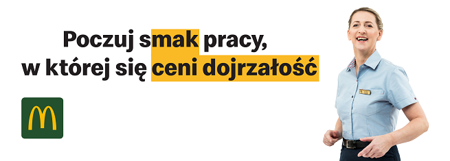

Jak zacząć prace w McDonalds?
Jest to bardzo prosta rzecz. Wystarczy zapytać kierownika zmiany o podanie dotyczące rozpoczęcia pracy w restauracji w której chcesz pracować.
Jeżeli znajdzie się dla ciebie miejsce, na pewno z chęcią przyjmą cię na okres próbny, trwający trzy miesiące.
Po okresie próbnym, gdy już poznasz stanowiska i zasady pracy w restauracji, otrzymasz umowę na dłuższy okres.

Pracujesz. I co dalej?
Po ukończeniu wsystkich wymaganych szkoleń na danych stanowiskach, jak i ukończeniu okresu próbnego, jesteś usytuowany na stanowisku Pracownika Restauracji.
Jednak kontynuując swoją pracę i wykazując zaangażowanie, po pewnym czasie będziesz mógł awansować na stanowisko Instruktora.
Na tym
stanowisku będziesz uczył innych nowych pracowników zaczynających swoją pracę na okresie próbnym.
Jednak awanse nie przychodzą tak szybko! Zanim poznasz wszystkie stanowiska, i sekrety kryjące się za nimi, przed tobą długa droga.
Nie zniechęcaj się, gdyż miła i przyjazna atmosfera pomiędzy pracownikami restauracji na pewno doda ci chęci do pracy!